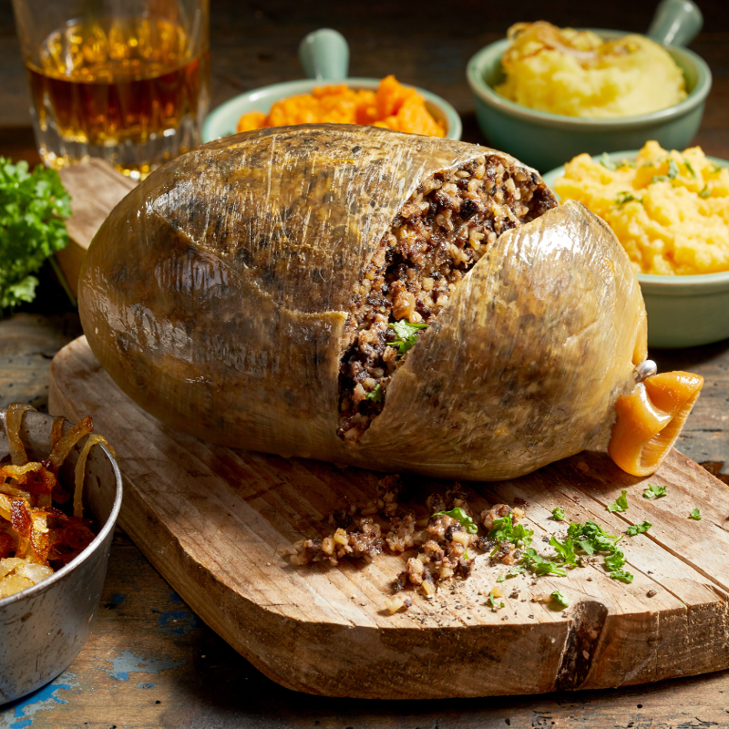

Haggis! A Scottish Treat!

Scottish dish consisting of a sheep's or calf's offal mixed with suet,
oatmeal, and seasoning and boiled in a bag, traditionally one made from
the animal's stomach.
Ingredients:
- Sheep stomach
- Sheep tongue
- Sheep eyeballs
- Sheep heart
- 11/2 Suet
- Salt + Pepper to taste
Steps:
-
Rinse the stomach thoroughly and soak overnight in cold salted water.
-
Rinse the liver, heart, and tongue. In a large pot of boiling, salted
water, cook these parts over medium heat for 2 hours. Remove and mince.
Remove any gristle or skin and discard.
-
In a large bowl, combine the minced liver, heart, tongue, suet, onions,
and toasted oats. Season with salt, pepper, and dried herbs. Moisten
with some of the cooking water so the mixture binds. Remove the stomach
from the cold salted water and fill 2/3 with the mixture. Sew or tie the
stomach closed. Use a turning fork to pierce the stomach several times.
This will prevent the haggis from bursting.
-
In a large pot of boiling water, gently place the filled stomach, being
careful not to splash. Cook over high heat for 3 hours.
- Serve with mashed potatoes, if you serve it at all.